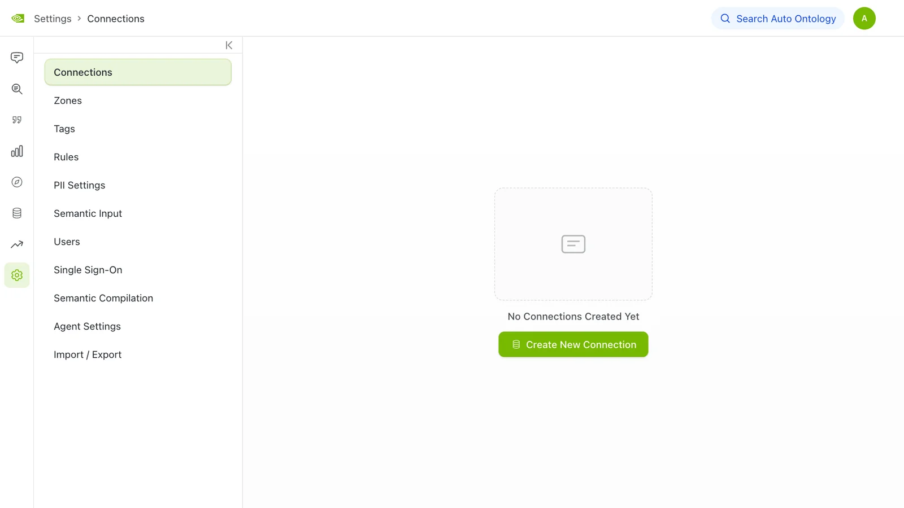
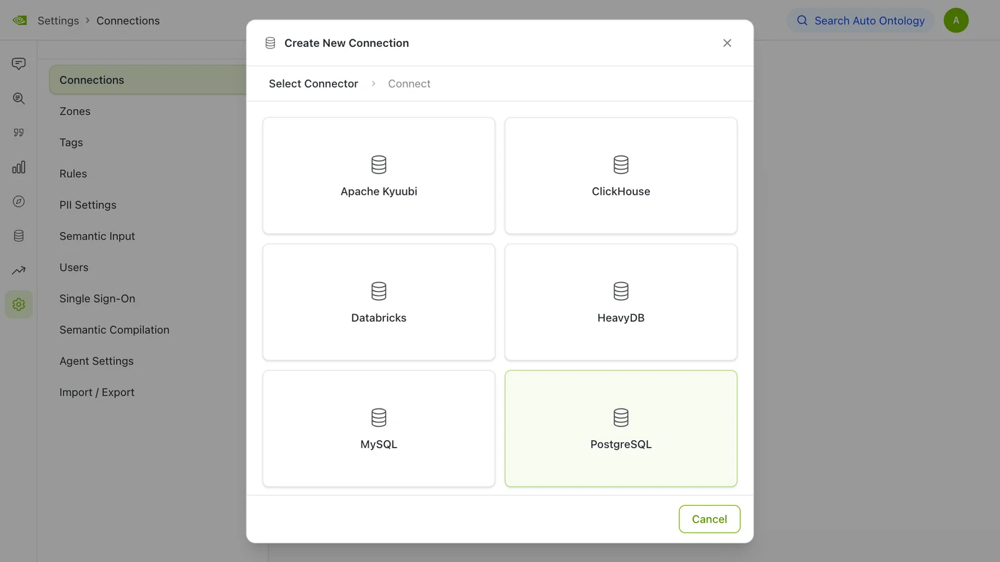
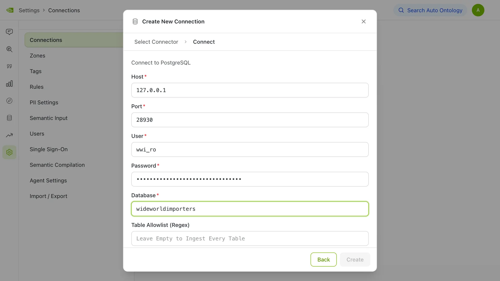
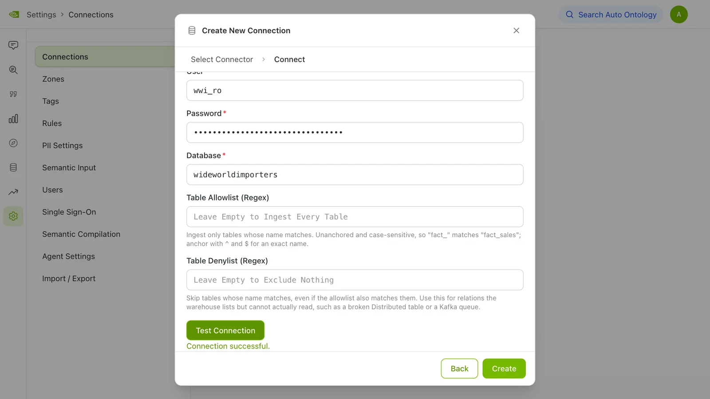
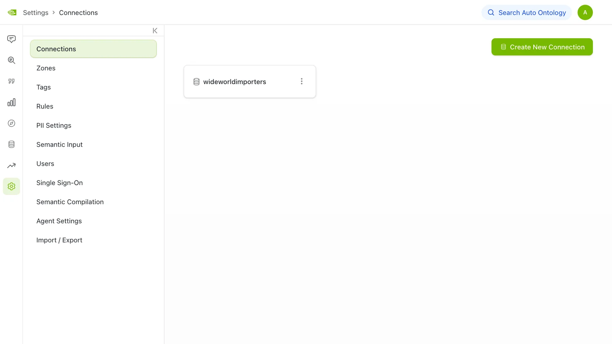

원천 데이터베이스에 읽기 전용 계정을 만들고, Settings → Connections에서 Wide World Importers를 PostgreSQL 연결로 추가합니다. 연결을 만들면 적재 서비스가 바로 스키마를 읽고 열을 표본 조사해 카탈로그를 채웁니다(표 51개, 열 589개, 6초).
무엇을 · 왜#
Auto Ontology가 원천 DB에 연결하는 방법은 두 가지입니다. 공식 문서(docs/connections.md)는 한 배포에서 한 가지만 쓰라고 합니다. 두 방식의 연결 선택 우선순위가 다르기 때문입니다.
| 방법 | 넣는 곳 | 특징 |
|---|---|---|
| 환경 변수 | .env의 CONNECTION_STRINGS (쉼표로 여러 개) |
공식 Quickstart의 방법. 스키마·표를 필터링할 수 없습니다. 적재는 이 값이 있으면 이것만 씁니다 |
| 화면·API | Settings → Connections, 또는 POST /api/connections |
스키마 허용 목록, 표 허용·제외 정규식을 지정할 수 있습니다. 관리자 권한(connection:manage)이 필요합니다 |
연결 커넥터는 PostgreSQL·MySQL·Databricks·Snowflake·ClickHouse·Trino·Apache Kyuubi·HeavyDB·DuckDB·SQLite 열 가지입니다. DuckDB와 SQLite는 CONNECTION_STRINGS로만 넣을 수 있습니다.
이 장에서는 화면으로 연결합니다. 그래서 1장에서 CONNECTION_STRINGS를 비워 두었습니다.
따라 하기#
- 읽기 전용 계정을 만듭니다. Auto Ontology는 원천에서 읽기만 합니다. 관리자 계정 대신 SELECT 권한만 가진 계정을 사용하면 모델이 만든 SQL이 실수로 데이터를 바꾸는 일을 처음부터 막을 수 있습니다. 원천 DB에 관리자로 접속해 실행합니다(비밀번호는 직접 정합니다).
이 계정으로
CREATE ROLE wwi_ro LOGIN PASSWORD '<새 비밀번호>'; GRANT CONNECT ON DATABASE wideworldimporters TO wwi_ro; GRANT USAGE ON SCHEMA application, purchasing, sales, warehouse, website TO wwi_ro; GRANT SELECT ON ALL TABLES IN SCHEMA application, purchasing, sales, warehouse, website TO wwi_ro;SELECT count(*) FROM sales.invoicelines는 228,265를 돌려주고,DELETE는permission denied for table invoicelines로 거절됩니다. - 연결 화면을 엽니다. 왼쪽 맨 아래 톱니바퀴(Settings) → Connections. 처음에는 「No Connections Created Yet」이 보입니다. Create New Connection을 누릅니다.

연결이 하나도 없는 Settings → Connections - 커넥터를 고릅니다. 화면에서 만들 수 있는 여덟 가지 가운데 PostgreSQL을 고릅니다.

커넥터 고르기 — Apache Kyuubi부터 PostgreSQL까지 - 접속 정보를 입력합니다. Host·Port·User·Password·Database는 필수입니다. 공식 Docker Compose라면 Host는
postgres, Port는5432입니다. 이 교재는 직접 띄운 PostgreSQL이라127.0.0.1·28930입니다. | 칸 | 이 교재의 값 | |---|---| | Host |127.0.0.1| | Port |28930| | User |wwi_ro| | Password | (1단계에서 정한 비밀번호) | | Database |wideworldimporters|
접속 정보를 넣은 PostgreSQL 연결 양식 — 비밀번호는 점으로 가려짐 - 걸러 낼 표를 정합니다(선택). 아래쪽 Table Allowlist (Regex)와 Table Denylist (Regex)는 비워 두면 모든 표를 적재합니다. 정규식은 처음과 끝을 고정하지 않으며 대소문자를 구분합니다. 예를 들어
fact_는fact_sales에도 걸리므로, 이름을 정확히 지정하려면^…$로 씁니다. 제외 목록이 허용 목록보다 우선합니다. 이 장에서는 공식 예제와 같게 둘 다 비워 둡니다. 보관용 사본 표(_archive)를 빼고 싶을 때 쓰는 방법은 3장에서 다룹니다. - 연결을 테스트하고 생성합니다. Test Connection을 누르면 1초쯤 뒤 「Connection successful.」이 뜹니다. 그다음 Create를 누릅니다.

Test Connection 결과 「Connection successful.」과 Create 단추 - 적재를 확인합니다. 목록에
wideworldimporters카드가 생기고, 적재 서비스가 곧바로 스키마를 읽습니다. 적재 서비스 로그에는 다음과 같이 기록됩니다.왼쪽 메뉴의 데이터베이스 모양(Data) → All Data에서 스키마 5개가 보입니다. application 15 · purchasing 7 · sales 12 · warehouse 14 · website 3입니다.Data ingestion finished successfully for database wideworldimporters — 51 table(s), 589 column(s), 640 embedding row(s) in 6.0s
연결 목록의 wideworldimporters
이 단계에서 만든 것은 카탈로그입니다. 표·열 이름, 자료형, 표본 값과 그 임베딩으로 구성됩니다. 아직 업무 용어는 없습니다. Terms 화면을 열면 비어 있습니다. 용어와 조인은 3장의 의미 계층 컴파일에서 생깁니다.
연결 비밀번호는 어디에 저장되나
공식 문서에 따르면 Vault를 설정하지 않으면 비밀번호를 포함한 연결 정보 전체가 JSON으로 Postgres의 카탈로그 행에 암호화되지 않은 채 저장됩니다. VAULT_ADDR·VAULT_NAMESPACE·VAULT_ROLE_ID·VAULT_SECRET_ID 네 값을 모두 설정하면 비밀번호는 Vault에만 두고 카탈로그 행에는 남기지 않습니다. 운영에서는 Vault를 쓰고, 어느 쪽이든 읽기 전용 계정을 사용합니다.
막히면#
막히면
- 화면에서 만든 연결이 적재되지 않음(적재 서비스 기록에
connections: using CONNECTION_STRINGS env) —.env에CONNECTION_STRINGS가 남아 있습니다. → 적재 시 이 값이 있으면 화면에서 만든 연결은 사용하지 않습니다. → 한 가지 방법만 씁니다. 화면으로 연결하려면CONNECTION_STRINGS=를 비우고 서비스를 다시 띄웁니다. - Docker Compose에서 Test Connection이 실패 — 컨테이너 안에서
localhost는 그 컨테이너 자신입니다. → Compose의 PostgreSQL은 Hostpostgres·Port5432로 넣습니다(공식CONNECTION_STRINGS예와 같은 값). 이 교재는 Docker를 쓰지 않아 직접 겪어 보지는 못했습니다.
확인 문제#
1. 같은 배포에서 `.env`의 CONNECTION_STRINGS와 화면 연결을 함께 쓰면 어떤 일이 생기나요?
적재는 CONNECTION_STRINGS가 있으면 그것만 쓰고, 질문은 화면 연결이 있으면 그것을 먼저 씁니다. 그래서 적재한 데이터와 질문에 쓰는 연결이 서로 다를 수 있습니다. 한 배포에서는 한 가지만 씁니다.
2. 연결 직후 Terms 화면이 비어 있는 까닭은 무엇인가요?
연결은 카탈로그(표·열·표본 값과 임베딩)만 만듭니다. 업무 용어와 조인은 Semantic Compilation을 켜야 생깁니다.
다음 장에서 Semantic Compilation을 켜고 의미 계층이 만들어지는 과정을 봅니다.